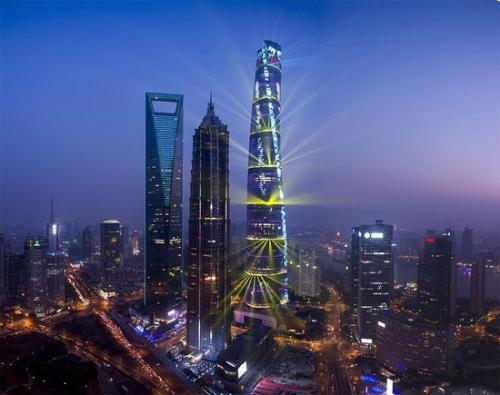
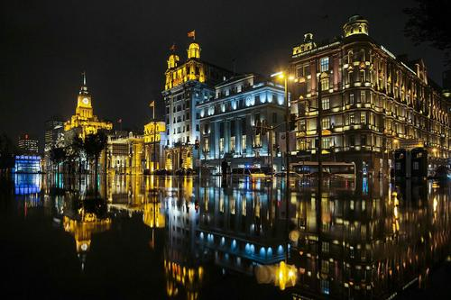
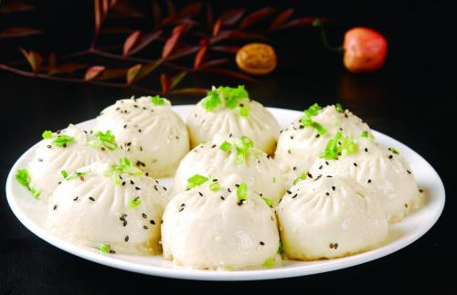

As one of the biggest cities in China. We can explore the colonial buildings alongside the Bund see how the city changed in past one-hundred years. Across the Yangtze River we can see great amounts of skyscrapers which includes the tallest building in China, as well as the second tallest building in the world. For people who like food, Shanghai has a variety of traditional food selling almost every street.
Shanghai is a delightful city to travel.
In 2016, Shanghai established the first Disney Land in China.
Disney
Shanghai Tower is the tallest building in China and is the second tallest building worldwide.

Symbolic of concession-era Shanghai--the Bund

On the Puxi side (old Shanghai) of the river, People’s Square is located at the center of the city and a great jumping-off point to visit some of Shanghai’s many attractions. These include: the Yu Gardens, a traditional Chinese garden surrounded by stunning ancient architecture; The Shanghai Museum, a great place to get a comprehensive look into China’s fascinating past; and West Nanjing Road, China’s busiest commercial street. On the Pudong side (new Shanghai), visitors can ascend one of the tallest buildings in the world, The Shanghai World Financial Center, visit the Shanghai aquarium with its impressive Shark Tunnel, or relax in Century Park, the city’s newest and largest garden.
♣There are various kinds of traditional food and snacks in Shanghai.♣
Here is a rank of the most popular food in Shanghai.
- Xiaolong
- Shengjianbao

- zifangao
- ...